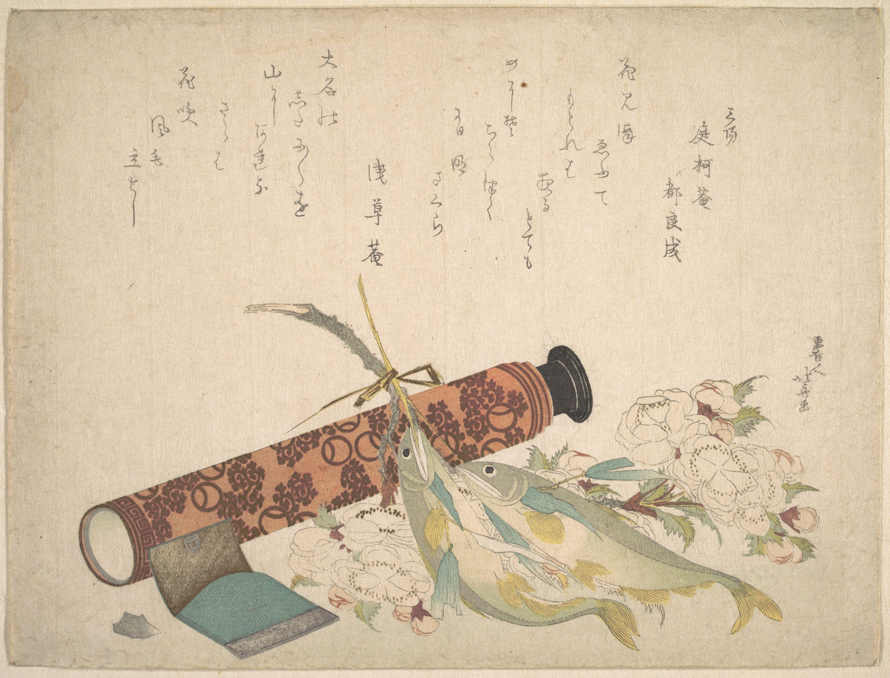

In Studio 1 you learned to see accurately. Now the next decision: where to put what you see, so the viewer's eye goes where you want. ~45 min
📖 ESSENTIAL QUESTION
Two artists draw the same objects. Why does one arrangement hold your eye and the other lose it?
Accurate drawing was Studio 1. This Studio is about arrangement. The same cup, book, and cloth can make a picture that feels calm, or tense, or empty, depending only on where each thing sits and how your eye is invited to travel. That set of choices has a name: composition.
👀 PART 1 · LOOK FIRST
Spend a full minute with the print below before you read the caption. Notice where your eye lands first, then where it goes next. Do not force it. Just watch it move.

Katsushika Hokusai (Japanese, 1760–1849), still-life surimono print with fish, blossoms, and a patterned case, c.1804. Woodblock print. Public domain. Source: provided course archive (Studio Art 2 Images, Unit 2).
Nothing here is centered. The case cuts a strong diagonal, the fish point one way, the blossoms open the other, and the poetry sits quietly in the upper space instead of crowding the objects. Your eye probably entered near the fish, slid along the case, and then drifted up into the words. That path was not an accident. Hokusai arranged every object to lead you.
💬 WONDER FIRST
Imagine the exact same objects lined up in a neat row across the middle of the page, evenly spaced, all the same size. Would your eye still travel, or would it just stop? Hold that thought. By the end of this Studio you will be arranging objects on purpose to control exactly that.
💭 QUICK CHECK-IN · NO WRONG ANSWER
When you looked at the print, where did your eye land first?
📚 PART 2 · NAME WHAT YOU SEE
Composition is the arrangement of the parts of an artwork within its frame. It is the artist's biggest decision after "what will I draw," because it controls the viewer's experience: what they notice first, how their eye travels, and how the whole thing feels. A drawing can be perfectly accurate and still fall flat if the composition is weak.
Watch it happen. Below are the same three shapes placed two ways. The objects are identical. Only the arrangement changes, and with it, everything you feel.
Centered, evenly spaced, all the same weight. Static. The eye has no reason to move and nowhere in particular to look.
Grouped, varied in size, set on a diagonal. The large gold circle grabs you first, then the dashed path carries your eye up and to the right. Alive.
THE ONE IDEA OF THIS STUDIO
Composition is how an artist controls where your eye goes, and in what order.
Every tool in the next five lessons, focal point, balance, and movement, is just a way to direct that path on purpose.
Three ideas do most of the work of composition, and you will practice each one this Studio. Meet them by name now; you will use them in every lesson that follows.
Focal pointThe spot the artist wants you to look at first; where the eye enters the image.
BalanceHow visual weight is distributed across the frame; it can be symmetrical or asymmetrical.
MovementThe path the artist builds for your eye to follow through the work.
Leading linesReal or implied lines that guide the eye toward the focal point.
🔍 PART 3 · WHY THIS COMES SECOND
Studio 1 gave you an accurate eye, but accuracy alone does not make a picture worth looking at. Once you can record what is in front of you, the real decision begins: how to arrange it. Composition is where you stop copying reality and start shaping the viewer's experience of it.
Your project for these two weeks is called Three Arrangements. You will choose one small set of objects and draw them three times, changing nothing but their arrangement, so that each version communicates a different feeling: calm, tension, and isolation. Same objects, three compositions, three moods. The arrangement does all the talking.
▶ Before you read on, look around the room and pick three small objects you could arrange in different ways. Then open this.
A mug, a spoon, and a folded cloth. A book, a pen, and a pair of glasses. Almost any small group works. The point is that the objects barely matter; what will change your three drawings is entirely where you place them and how you point the viewer's eye. Keep your three objects in mind; they may become your project subject.
🗺️ YOUR PATH THROUGH STUDIO 2
1
The Arrangement Decides · you are here. Why composition controls the viewer's eye.
2
The Composer's Eye · how Hopper and Cartier-Bresson arranged the frame (critique).
3
Focal Point & the Rule of Thirds · skill builder: where the eye enters and how to place it.
4
Balance & Movement · skill builder: symmetrical vs. asymmetrical, leading lines, the eye path.
5
Plan & Create · choose your objects, plan three arrangements, VR gallery, begin the artwork.
6
Refine, Reflect & Present · finish, self-critique, artist statement, portfolio.
➡️ AFTER THIS LESSON
1
Warm-up: The Careless Arrangement · Week 1
Right now, before you learn any composition tool, gather three objects and quickly sketch them with no plan at all: just drop them on the page. Keep this sketch. In Lesson 6 you will compare it with your finished arrangements. This is your before picture.
2
Continue to Lesson 2: The Composer's Eye
See how two artists made arrangement the whole point of the picture.
💪 THE BIG IDEA
The same objects can make a hundred different pictures. What separates them is arrangement. For the next two weeks you will treat placement as the decision it really is, and you will be surprised how much feeling you can change without changing a single object.
Optima Academy Online · 2D STUDIO ART 2 · Quarter 1 · Student Lesson Page